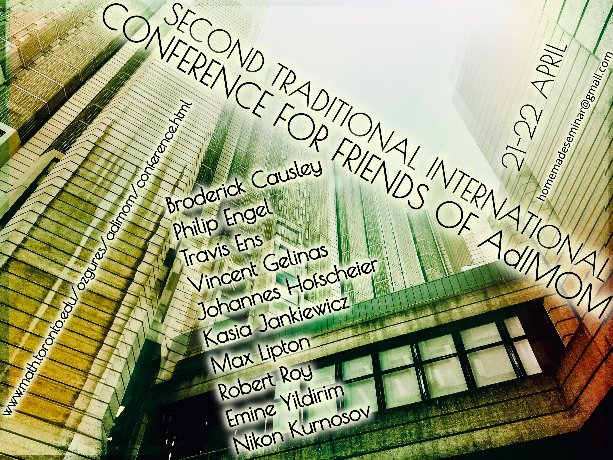

AdIMOM
Adequate Institute of Mediocre and Outstanding Mathematics
About us |
Past Seminars |
Conference

On April 20-22, approximately twenty of us will gather in our house in Toronto and spend the weekend talking about mathematics. We expect there to be ten talks: five on Saturday, five on Sunday. We will supply food, coffee, tea and snacks in rich abundance, with a reception to be held Friday evening. If you share our philosophy and passion for mathematics, you are invited to join us for our second conference at AdIMOM.
Last year's conference
Invited Speakers
- Broderick Causley, (McGill University)
- Philip Engel, (Harvard University)
- Travis Ens, (University of Toronto)
- Vincent Gelinas, (University of Toronto)
- Johannes Hofscheier, (McMaster University)
- Kasia Jankiewicz, (McGill University)
- Max Lipton, (Cornell University)
- Robert Roy, (Syracuse University)
- Emine Yildirim, (Université de Québec à Montréal)
- Nikon Kurnosov, (University of Georgia)
Schedule
| Friday |
|
| 20:00 |
Dinner |
| Saturday |
|
| 9:00-9:50 |
Breakfast and Registration |
| 10:00-11:10 |
Kasia Jankiewicz (abstract) |
| 11:10-11:30 |
Tea Break |
| 11:30-12:40 |
Max Lipton (abstract) |
| 12:40-14:40 |
Lunch |
| 14:40-15:50 |
Emine Yildirim (abstract) |
| 15:50-16:10 |
Tea Break |
| 16:10-17:20 |
Travis Ens (abstract) |
| 17:30-18:40 |
Nikon Kurnosov (abstract) |
| 18:40-19:30 |
Discussions and rest (or excursion to LCBO) |
| 19:30-21:30 |
Dinner |
| 21:30-23:30 |
Entertainment. |
| 23:30-00:00 |
Teeth brush break |
| 00:00 |
Bed time |
| Sunday |
|
| 9:00-10:20 |
Breakfast |
| 10:30-11:40 |
Vincent Gelinas (abstract) |
| 11:40-12:00 |
Tea Break |
| 12:00-13:10 |
Rob Roy (abstract) |
| 13:10-15:00 |
Lunch |
| 15:00-16:10 |
Johannes Hofscheier (abstract) |
| 16:10-16:30 |
Tea Break |
| 16:30-17:40 |
Philip Engel (abstract) |
| 17:40-18:10 |
Broderick Causley (abstract) |
| 18:10-19:00 |
Discussions and rest (or excursion to LCBO) |
| 19:00-21:00 |
Dinner |
-----
Abstracts
Speaker: Kasia Jankiewicz
Date: April 22, 2018
Title: Graph coloring problem and fibering right angled Coxeter groups
Abstract: I will talk about joint work with Sergey Norin and Daniel Wise on virtual algebraic fibrations of right angled Coxeter groups. We say that a group virtually algebraically fibers if there exists a finite index subgroup that admits an epimorphism onto the integers with finitely generated kernel. In my talk I will try to motivate this notion of fibration. Then I will discuss right angled Coxeter groups and give a lot of examples. Finally I will describe a simple graph coloring problem whose solution, if exists, provides a virtual algebraic fibration of the right angled Coxeter group associated to the graph.
-----
Speaker: Max Lipton
Date: April 21, 2018
Title: From RAAGs to Riches: Right Angled Artin Groups and their Topology
Abstract: A Right Angled Artin Group (RAAG) encodes the edge set of a graph via commutativity relations on its generators. In this talk, I will explore the depths of these deceptively easily-defined groups by using techniques from geometric group theory to recognize when a RAAG has a surface's homotopy group as a subgroup. I will also show how to solve the word problem of RAAGs. In the end of the talk, I will outline current research by Jon McCammond which is attempting to generalize these techniques to Artin and Coxeter groups.
-----
Speaker: Emine Yildirim
Date: April 21, 2018
Title: Cluster Monomials in Web Basis
Abstract: Fomin-Pylyavskyy showed that there is a cluster algebra structure on the ring of $SL(V)$-invariants of the coordinate ring $\mathbb{C}[(V^*)^a\times V^b]$ when $dim V=3$ using the web basis introduced by Kuperberg. In this talk, we will discuss the web basis from the Fomin-Pylyavsky perspective and show that Khovanov-Kuperberg's labeling of a web identifies the leading monomial of the corresponding invariant polynomial with respect to a certain natural term order. This is a joint work with Véronique Bazier-Matte, Guillaume Douville, Alexander Garver, Rebecca Patrias, and Hugh Thomas.
-----
Speaker: Travis Ens
Date: April 21, 2018
Title: TBA
Abstract: TBA
-----
Speaker: Nikon Kurnosov
Date: April 21, 2018
Title: TBA
Abstract: TBA
-----
Speaker: Vincent Gelinas
Date: April 22, 2018
Title: Absolutely beautiful duality, or the long march
through Koszul duality
Abstract:
Abstract. Koszul duality was introduced by Priddy in his study of the Steen-
rod algebra but quickly became this illuminating perspective on many seem-
ingly disparate topics, such as the duality between the commutative (Sullivan)
model and Lie (Quillen) model of a rational space, the equivalence between the
representation theories of certain quadratic graded algebras and their Ext alge-
bra, or the relationship between a group(-like object) and its classifying space
(delooping). As the story goes, it was once debated whether the overarching
idea should go by Priddy duality, or simply 'beautiful duality'.
Yet as one grapples with the various forms of Koszul duality beyond their
original stated form, imperfections and thorny issues arise, as well as ill-
fitting statements shoehorned into the theory. This is the case of the beau-
tiful Bernstein-Gelfand-Gelfand correspondence relating sheaves on projective
space to modules over the exterior algebra, whose generalisation to complete
intersections of quadrics seemingly takes herculean effort in comparison, and
with extensions to more interesting varieties hitting a hard wall.
By rethinking the form of the general BGG correspondence to incorporate
insights from modern commutative algebra, we will see how to obtain a sharp
statement whose proof has a natural flow. This way we will recover the BGG
correspondence for complete intersections of quadrics, and extend it to ellip-
tic normal curves of degree ≥ 4, non-hyperelliptic canonical curves of high
genus, anticanonical models of del Pezzo surfaces of degree ≥ 4, arithmetically
Gorenstein varieties defined by quadratic monomial equations, . . .
-----
Speaker: Robert Roy
Date: April 22, 2018
Title: Auslander-Reiten Sequences over Gorenstein Rings of Dimension One
Abstract: Let R be a complete local Gorenstein ring of dimension one, with maximal ideal m. We show that if M is a maximal Cohen-Macaulay R-module which begins an Auslander-Reiten sequence, then this sequence is ``produced by" an endomorphism of m. We also adapt results due to Zacharia and others, in the setting of Artin algebras, to the situation of maximal Cohen-Macaulay modules over R, and apply these results to special cases of the Huneke-Wiegand Conjecture.
-----
Speaker: Johannes Hofscheier
Date: April 21, 2018
Title: Spanning Lattice Polytopes and the Uniform Position Principle
Abstract:A lattice polytope is called spanning if its lattice points affinely span the ambient lattice. In this
talk, I will present recent joint work with Lukas Katthän and Benjamin Nill, where we generalize Harris' Uniform Position
Principle to obtain new inequalities for the h^*-vector of spanning lattice polytopes. This extends Hibi's inequality for
polytopes with interior lattice points, as well as certain inequalities due to Stanley.
-----
Speaker: Philip Engel
Date: April 22, 2018
Title: Penrose Tilings
Abstract: TBA
-----
Speaker: Broderick Causley
Date: April 21, 2018
Title: The Shape of Sound
Abstract: What do shapes sound like? More precisely, what frequencies do you get when you solve the eigenvalue problem for an operator like the Laplacian? In this talk, we will discuss the relationship between geometric manifolds and (pseudo)differential operators. We will look at the direct (computing the spectrum) and inverse (recovering the geometry) problems, and mention some interesting real world applications.